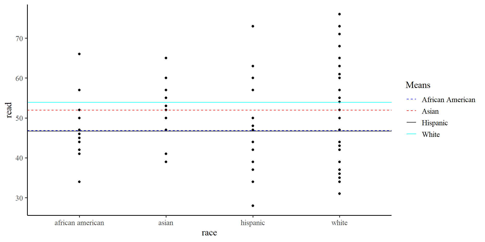

PSYC 7804 - Regression with Lab
fastDummies package (Kaplan & Schlegel, 2025) provides some functions to help with dummy coding. Later, I show a better way of achieving dummy coding in R, but this package offers the “more standard” procedure.
So far we have only dealt with continuous variables. Namely, we have interpreted slopes as “the change in \(Y\) per unit change in \(X\)”.
gender should predict write score, the “unit-change” notion does not make as much sense.
write score on the \(y\)-axis and gender on the \(x\)-axis we can visualize observations in each group. But there are no ‚Äúunits‚Äù on the \(x\)-axis ü§î
You can use the lm() function with only one variable. Meaning, you can run a regression without any predictors (!?). for example, for the write variable:
Call: lm(formula = write ~ 1, data = hsb2)
Coefficients:
Estimate Std. Error t value Pr(>|t|)
(Intercept) 52.7750 0.6702 78.74 <2e-16 ***
---
Signif. codes: 0 '***' 0.001 '**' 0.01 '*' 0.05 '.' 0.1 ' ' 1
Residual standard deviation: 9.479 on 199 degrees of freedom
AIC BIC
1470.19 1476.78 The intercept, \(52.78\) and the residual SD, \(9.47\). These values are the mean and SD of the write variable.
If we only use the intercept in out model, the “regression line” will be flat and intercept the \(y\)-axis at the mean of \(Y\).
…but wait a moment, we have two groups, female and male. How about we give each group their own intercept?
write, should differ based on gender.In the previous plot we were using the “grand mean” of write. If we use the two means instead…
We see that the means of the two groups are different.
We can run a regression model that is the representation of the graph on the right
mean_female <- mean(hsb2$write[hsb2$gender == "female"])
mean_male <- mean(hsb2$write[hsb2$gender == "male"])
ggplot(hsb2, aes(x = gender, y = write)) +
geom_point() +
geom_hline(aes(yintercept = mean(mean_female), color = "Female"),
linetype = "dashed") +
geom_hline(aes(yintercept = mean(mean_male), color = "Male"),
linetype = "dashed") +
geom_hline(aes(yintercept = mean(hsb2$write), color = "Grand Mean")) +
scale_color_manual(values = c("Female" = "blue", "Male" = "red", "Grand Mean" = "black")) +
labs(color = "Means")We can code our categorical variables such that they are treated as continuous variables. Usually, we treat one group as “0”, and the other group as “1”. Let’s say that male is \(0\) and female is \(1\):
hsb2$gender_binary <- ifelse(hsb2$gender == "female", 1, 0)
reg_gender_bin <- lm(write ~ gender_binary, data = hsb2)
summary(reg_gender_bin)
Call:
lm(formula = write ~ gender_binary, data = hsb2)
Residuals:
Min 1Q Median 3Q Max
-19.991 -6.371 1.879 7.009 16.879
Coefficients:
Estimate Std. Error t value Pr(>|t|)
(Intercept) 50.1209 0.9628 52.057 < 2e-16 ***
gender_binary 4.8699 1.3042 3.734 0.000246 ***
---
Signif. codes: 0 '***' 0.001 '**' 0.01 '*' 0.05 '.' 0.1 ' ' 1
Residual standard error: 9.185 on 198 degrees of freedom
Multiple R-squared: 0.06579, Adjusted R-squared: 0.06107
F-statistic: 13.94 on 1 and 198 DF, p-value: 0.0002463\(\mathrm{write} = 50.12 + 4.87 \times \mathrm{gender}\)
male, the intercept is the mean of the male group in write score.
female, the slope is the difference in means between the male and female group in write score (\(50.12 + 4.87 = 54.99\)).
We just tested whether male and female are significantly different in mean write score. This is what you should know as an independent-samples t-test (!).
Two Sample t-test
data: hsb2$write by hsb2$gender
t = 3.7341, df = 198, p-value = 0.0002463
alternative hypothesis: true difference in means between group female and group male is not equal to 0
95 percent confidence interval:
2.298059 7.441835
sample estimates:
mean in group female mean in group male
54.99083 50.12088 You should see that t-values, degrees of freedom, and p-values are the same as those for the slope on the previous slide.
No Coincidences in Statistics
There are no coincidences in statistics. If two methods give some of the same results, they must be related in some way. When you see such patterns, ask yourself why two methods produce the same results. Once you answer that question, you will have gained tremendous insight.
t-tests don’t exist really. For some reason everyone decides to teach t-tests separately from regression, but they are simply a specific case of a regression.
Since gender is not really a continuous variable, so we can turn it into any numeric values and still run a regression. For example:
hsb2$gender2 <- ifelse(hsb2$gender == "female", -314, -140)
reg_gender2 <- lm(write ~ gender2, data = hsb2)
summary(reg_gender2)
Call:
lm(formula = write ~ gender2, data = hsb2)
Residuals:
Min 1Q Median 3Q Max
-19.991 -6.371 1.879 7.009 16.879
Coefficients:
Estimate Std. Error t value Pr(>|t|)
(Intercept) 46.202531 1.876128 24.627 < 2e-16 ***
gender2 -0.027988 0.007495 -3.734 0.000246 ***
---
Signif. codes: 0 '***' 0.001 '**' 0.01 '*' 0.05 '.' 0.1 ' ' 1
Residual standard error: 9.185 on 198 degrees of freedom
Multiple R-squared: 0.06579, Adjusted R-squared: 0.06107
F-statistic: 13.94 on 1 and 198 DF, p-value: 0.0002463male and female as \(0\) and \(1\) or \(-314\) and \(-140\) (some random numbers I chose), the models are equivalent. However, the values of the intercept and slope are now meaningless.
We have looked at the 2 groups case where we assigned \(0\) to one group and \(1\) to the other. However, what do we do when we have more than 2 groups?
c(1, 0, 0): African American
c(0, 1, 0): Hispanic
c(0, 0, 1): Asian
c(0, 0, 0): White
The manual way of dummy coding variables in R involves creating separate columns. Here I show the dummy_columns() function from the fastDummies package.
remove_most_frequent_dummy = TRUE argument turns the most frequent category, white in our case, into the c(0, 0, 0) group.
c(0, 0, 0) group is going to be the reference group. It will be clear why once we run the regression and look at the results.
We want to test group difference in read scores across the race variable.
reg_race <- lm(read ~ `race_african american` + race_asian + race_hispanic,
dummy_dat)
summary(reg_race)
Call:
lm(formula = read ~ `race_african american` + race_asian + race_hispanic,
data = dummy_dat)
Residuals:
Min 1Q Median 3Q Max
-22.924 -6.924 0.200 8.337 26.333
Coefficients:
Estimate Std. Error t value Pr(>|t|)
(Intercept) 53.9241 0.8213 65.658 < 2e-16 ***
`race_african american` -7.1241 2.3590 -3.020 0.00286 **
race_asian -2.0150 3.0929 -0.652 0.51548
race_hispanic -7.2575 2.1794 -3.330 0.00104 **
---
Signif. codes: 0 '***' 0.001 '**' 0.01 '*' 0.05 '.' 0.1 ' ' 1
Residual standard error: 9.89 on 196 degrees of freedom
Multiple R-squared: 0.08365, Adjusted R-squared: 0.06962
F-statistic: 5.964 on 3 and 196 DF, p-value: 0.0006539read score for white individuals.
read score for african american individuals compared to white individuals.
read score for asian individuals compared to white individuals.
read score for hispanic individuals compared to white individuals.
white. Further, the p-values of the slopes tell us whether the mean difference in read score between white and a specific group is significant!
# A tibble: 4 × 2
race `Group means`
<chr> <dbl>
1 african american 46.8
2 asian 51.9
3 hispanic 46.7
4 white 53.9means <- hsb2 %>%
group_by(race) %>%
summarise(Group_means = mean(read)) %>%
as.data.frame
ggplot(hsb2, aes(x = race, y = read)) +
geom_point() +
geom_hline(aes(yintercept = means[1,2], color = "African American"),
linetype = "dashed") +
geom_hline(aes(yintercept = means[2,2], color = "Asian"),
linetype = "dashed") +
geom_hline(aes(yintercept = means[3,2], color = "Hispanic")) +
geom_hline(aes(yintercept = means[4,2], color = "White")) +
scale_color_manual(values = c("African American" = "blue", "Asian" = "red", "Hispanic" = "black",
"White" = "cyan")) +
labs(color = "Means")
asian individuals, the regression will use \(51.9\) to calculate residuals, for white individuals, the regression will use \(53.9\), and so on…
We just ran what you may know as one-way ANOVA. If you remember from intro stats, the calculation for the sum or squares error (\(SSE\), the residuals) in ANOVAs involves this equation:
\[ \sum(X_{ij} - \bar{X}_j)^2, \]
where \(X_{ij}\) is the observation of the \(i^{th}\) of individual in the \(j^{th}\) group, and \(\bar{X}_j\) is the mean of the \(j^{th}\) group. The \(\bar{X}_j\) part represents the mean that the residuals are calculated against changing for each group.
Coding variables manually takes some effort on the user’s end. We can use factor variables to make the process smoother.
we use the factor() function to turn any variable into a factor. Let’s turn the race variable into a factor:
levels = this argument tells the function the levels of our factor. R will choose levels automatically if you don’t specify them.
labels = this argument renames each level respectively. It’s optional; I use it to make labels shorter here.
contrasts() function on a dummy coded variable, R tells you how each variable is coded. The output is known as a contrast matrix.
W in our case, is coded as the reference group.
Call:
lm(formula = read ~ race, data = hsb2)
Residuals:
Min 1Q Median 3Q Max
-22.924 -6.924 0.200 8.337 26.333
Coefficients:
Estimate Std. Error t value Pr(>|t|)
(Intercept) 53.9241 0.8213 65.658 < 2e-16 ***
raceAA -7.1241 2.3590 -3.020 0.00286 **
raceA -2.0150 3.0929 -0.652 0.51548
raceH -7.2575 2.1794 -3.330 0.00104 **
---
Signif. codes: 0 '***' 0.001 '**' 0.01 '*' 0.05 '.' 0.1 ' ' 1
Residual standard error: 9.89 on 196 degrees of freedom
Multiple R-squared: 0.08365, Adjusted R-squared: 0.06962
F-statistic: 5.964 on 3 and 196 DF, p-value: 0.0006539This is the exact regression output from some slides ago, but we did not have to create all the dummy coded columns manually üòÄ
If you are using R, I recommend using factor variables rather than manually creating dummy coded variables.
Factor Variables are R specific
Every programming language has some common variable types (e.g., double, integer, character,…), but, as far as I can tell, factor variables are unique to R. The R programming language was created with statistics in mind. The fact that factor variables automatically dummy code categorical variables is a reflection of that.
race variable such that all the groups are compared to the white group. We can test different hypotheses if we change our coding scheme. Thanks to the way factor variables work, there is an elegant way of changing coding schemes!
Call:
lm(formula = read ~ race, data = hsb2)
Residuals:
Min 1Q Median 3Q Max
-22.924 -6.924 0.200 8.337 26.333
Coefficients:
Estimate Std. Error t value Pr(>|t|)
(Intercept) 49.825 1.076 46.297 < 2e-16 ***
race1 4.099 1.223 3.352 0.000963 ***
race2 -3.025 1.898 -1.594 0.112644
race3 2.084 2.367 0.880 0.379722
---
Signif. codes: 0 '***' 0.001 '**' 0.01 '*' 0.05 '.' 0.1 ' ' 1
Residual standard error: 9.89 on 196 degrees of freedom
Multiple R-squared: 0.08365, Adjusted R-squared: 0.06962
F-statistic: 5.964 on 3 and 196 DF, p-value: 0.0006539factor, the slopes test whether either W, AA, or A individuals are significantly different in mean read score from the unweighted grand mean.
W group, which was coded as c(1, 0, 0). We can get the mean by plugging the values into the regression:
c(-1,-1,-1), H in our case, is always “left out”, as we don’t test any hypotheses about it directly.
The contr.sum() function creates contrasts assuming that all groups have the same number of participants. This is not true in out case:
H group, then we achieve weighted effects coding by substituting the last row with \(\mathrm{c}(-\frac{N_W}{N_H}, -\frac{N_{AA}}{N_H}, -\frac{N_A}{N_H})\)
Call:
lm(formula = read ~ race, data = hsb2)
Residuals:
Min 1Q Median 3Q Max
-22.924 -6.924 0.200 8.337 26.333
Coefficients:
Estimate Std. Error t value Pr(>|t|)
(Intercept) 52.2300 0.6993 74.689 < 2e-16 ***
race1 1.6941 0.4307 3.934 0.000116 ***
race2 -5.4300 2.0979 -2.588 0.010368 *
race3 -0.3209 2.8987 -0.111 0.911960
---
Signif. codes: 0 '***' 0.001 '**' 0.01 '*' 0.05 '.' 0.1 ' ' 1
Residual standard error: 9.89 on 196 degrees of freedom
Multiple R-squared: 0.08365, Adjusted R-squared: 0.06962
F-statistic: 5.964 on 3 and 196 DF, p-value: 0.0006539read score!
W, AA, and A group in read score compared to the average read score for the whole sample.
W group is \(1.69\) points higher in read score points compared to the sample average. (significant)
AA group is \(5.43\) points lower in read score points compared to the sample average. (significant)
A group is \(0.32\) points lower in read score points compared to the sample average. (not significant)
Jokes aside, contrasts are used to test hypotheses. You can test any type of mean comparison hypothesis by specifying the appropriate contrast.
Why are we ‚Äúallowed‚Äù to mess with regression coefficients in this way? Well, if you think about it, categorical variables have no meaningful numerical scale (e.g., we don‚Äôt say ‚Äúpasta üçù is greater than pizza üçï‚Äù).
However, we can assign some numerical scale to categorical variables such that the regression coefficients are “forced” to test the hypotheses we are interested in.
Do you need contrast matrices when testing hypotheses? Nah ü§∑ In practice, you can just compare group means one by one. However, contrast matrices are an elegant way of testing multiple hypotheses at once.
Lab 10: Categorical Predictors